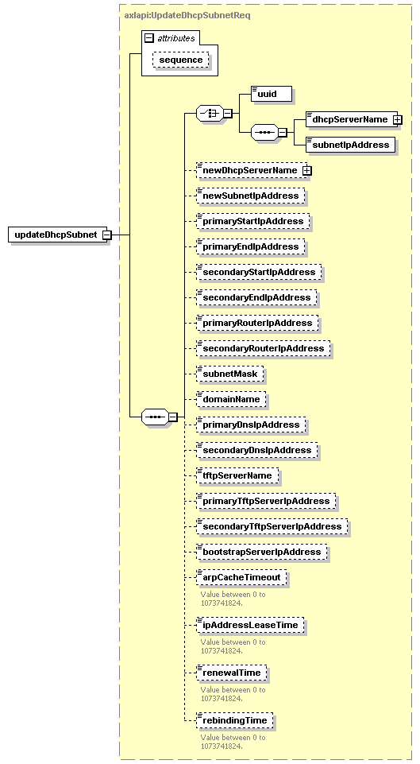

| diagram |  | ||||||||||||
| namespace | http://www.cisco.com/AXL/API/10.5 | ||||||||||||
| type | axlapi:UpdateDhcpSubnetReq | ||||||||||||
| properties |
|
||||||||||||
| children | uuid dhcpServerName subnetIpAddress newDhcpServerName newSubnetIpAddress primaryStartIpAddress primaryEndIpAddress secondaryStartIpAddress secondaryEndIpAddress primaryRouterIpAddress secondaryRouterIpAddress subnetMask domainName primaryDnsIpAddress secondaryDnsIpAddress tftpServerName primaryTftpServerIpAddress secondaryTftpServerIpAddress bootstrapServerIpAddress arpCacheTimeout ipAddressLeaseTime renewalTime rebindingTime | ||||||||||||
| attributes |
|
||||||||||||
| source | <xsd:element name="updateDhcpSubnet" type="axlapi:UpdateDhcpSubnetReq"/> |